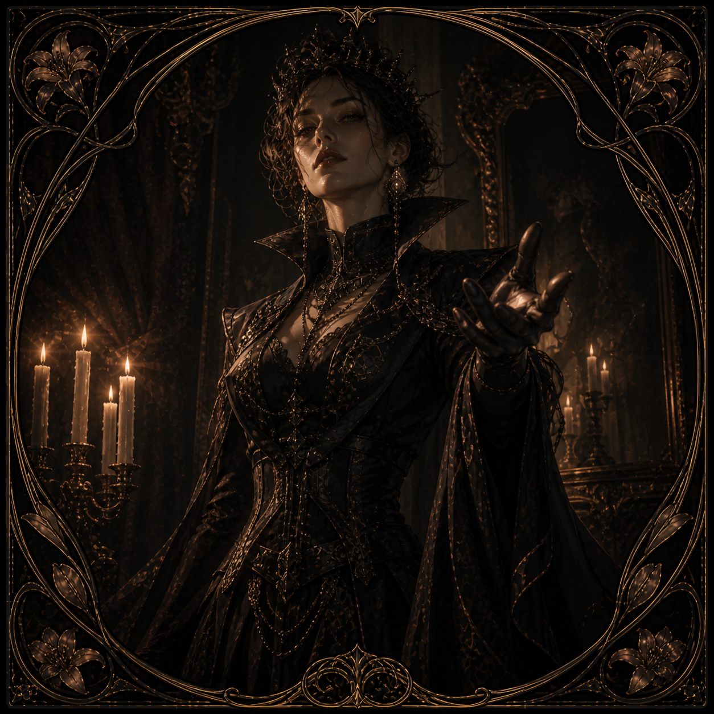
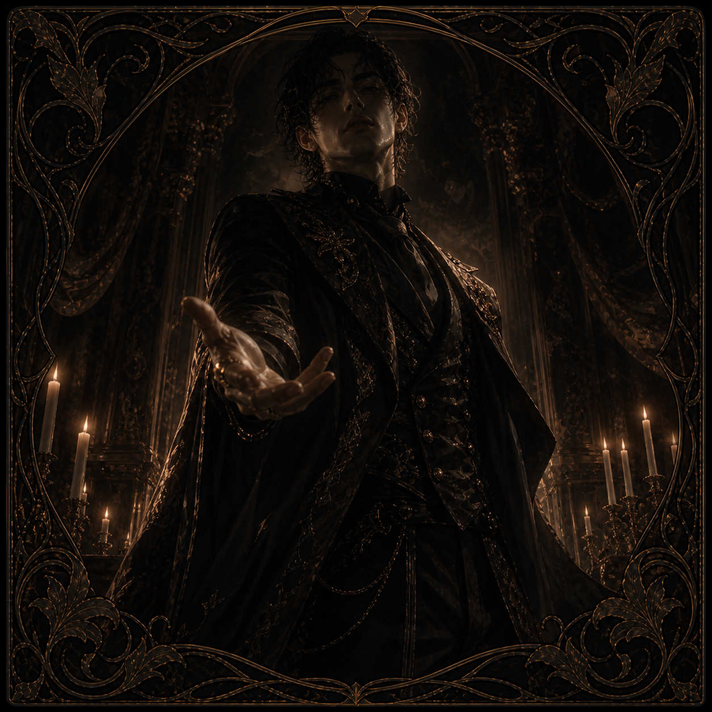

DESIRE ARCHETYPE
你如何被點燃？
你如何流動？
你被什麼牽引？
BEFORE YOU BEGIN
這不是一份測出你有多特別的測驗。
這是一份關於慾望如何被點燃、
權力如何在關係中流動、
以及你真正被什麼牽引的原型分析。
請依照你在親密關係中的真實反應作答，
不要選你希望自己成為的樣子。
NOTICE
本測驗中的「越界」指的是在明確合意、可撤回、安全詞與事後照護存在的前提下，探索心理、情境、身份或感官邊界。
它不代表侵犯、不代表強迫，也不代表突破拒絕。
本結果描述的是你在親密與慾望情境中的原型傾向，不等同於完整人格、道德評價或心理診斷。
IMAGE PREFERENCE
這只影響結果頁的圖像呈現，不影響分析內容

女性圖像
男性圖像CHAPTER ONE
有些慾望從自身內部燃起，
有些慾望在對方靠近時才開始有形。
CHAPTER TWO
親密不是固定的上下，
而是能量在兩人之間被給出、接收、交換。
CHAPTER THREE
有些人被感官召喚，有些人被張力牽引，
有些人需要儀式，有些人靠近邊界。
後面的題目會觸及「邊界」的概念。
這裡的邊界，指的是在清楚合意與可撤回的前提下，心理或情境層面的探索。
如果你感到不適，可以隨時停止。
正在分析你的慾望原型
——